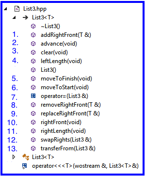

Portfolio
those are pretty much everything that i have done in my whole life that is related to CS projects. thank you very much for check on it!!!
-
Layering list on queue
The primary objective of this lab is to provide you experience working with: Layering a component (e.g., List) on another already existing component (e.g., Queue). This implementation is not meant to be necessarily a good (performance-wise) implementation. In fact it is not a good one from that respect. The idea here is to have you work with an unusual internal rep in order to reinforce the abstract thinking that goes with interpreting the correspondence between the concrete internal rep and the List's abstract value. From this standpoint, it is an excellent implementation.
Link Here -
Layering sequence on stack

The primary objective of this lab is to provide you experience with: Layering a component (e.g., Sequence) on another already existing component (e.g., Stack) Where you choose the underlying component upon which to do the layering Your choice of underlying component must come from those shown in the screen shot below Where you choose the correspondence between the component being developed (Sequence in this case) and the underlying data structures
Link Here -
Tree on Map

Layering a component (e.g., Map) on an already existing component (e.g., BinaryTree) An abstract math model for Binary Trees Investigate formal methods concepts related recursion Revisit binary search tree (BST) in an implementation of Map
Link Here -
lovers mode plug in for WhatsApp

Its a plug-in to help lovers dealing with fight and cold wars.
Link -
Game Design: Over the Sea
Game design is the art of applying design and aesthetics to create a game for entertainment or for educational, exercise, or experimental purposes. Increasingly, elements and principles of game design are also applied to other interactions, in the form of gamification. Game designer and developer Robert Zubek defines game design by breaking it down to its elements, which he says are the following:[1] Mechanics and systems, which are the rules and objects in the game Gameplay, which is the interaction between the player and the mechanics and systems Player experience, which is how users feel when they’re playing the game Games such as board games, card games, dice games, casino games, role-playing games, sports, video games, war games, or simulation games benefit from the principles of game design.
Link Here -
Build Stack with a FIFO Queue
An excellent example of a queue is a line of students in the food court of the UC. New additions to a line made to the back of the queue, while removal (or serving) happens in the front. In the queue only two operations are allowed enqueue and dequeue. Enqueue means to insert an item into the back of the queue, dequeue means removing the front item. The picture demonstrates the FIFO access. The difference between stacks and queues is in removing. In a stack we remove the item the most recently added; in a queue, we remove the item the least recently added.
Link Here -
colorSlider

Create flexible layouts using constraints Describe what constraints can be applied to views Implement a UI layout plan in Xcode Interface Builder the main thing user can do here is not very much but you can slide the color bar in whatever way you want to.
Link Here -
Population Algorithm Design

I reviewed two categories of literature, which include population-based algorithms solving data analysis problem and utilizing data analysis methods in population-based algorithms.
Link Here